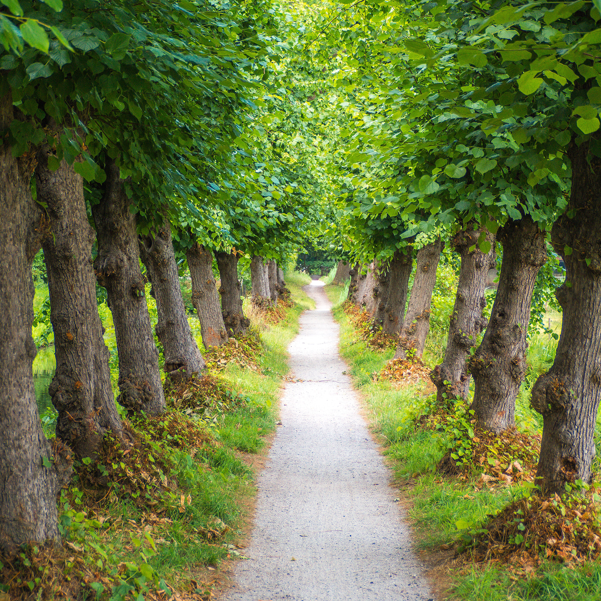

By now, we've seen that our perceptions of nature and environmental issues are shaped by many sources--political debate, art, documentaries, and so forth. Among the important sources about the environment have been journalists and the news media. In this chapter, we explore the emergence and changing nature of environmental journalism, the forces that influence the production of environmental news, and some of the effects of environmental news in the public sphere. Because journalists play such an important role in shaping public opinion, they often come under scrutiny.
At the heart of environmental journalism is a dilemma. Journalism professor Sharon M. Friedman (2004) observed that environmental journalists working in traditional media still must deal with a "shrinking news hole while facing a growing need to tell longer, complicated and more in-depth stories" (p. 176) In journalistic parlance, a news hole is the amount of space that is available in a newspaper or TV news story relative to other demands for the same space. Friedman explains that competition for shrinking news space has increased the pressure on journalists to simplify or dramatize issues to ensure that a story gets printed or aired. As a result, in addition to pressures to use popular digital technologies (such as Twitter), many journalists also are using blogs associated with their newspapers, which often offer greater freedom and, notably, space to tell more in-depth stories with multimodal formats.
By the 1960s, environmental crises began to appear prominently in U.S. news media--from TV film of an oil spill off the coast of Santa Barbara to Time magazine's story of Ohio's Cuyahoga River bursting into flames from pollution in 1969. During the next decades, environmental news would periodically expand and wane. By the 21st century's second decade, the cumulative effect of "reporting on topics like climate change, biodiversity and toxic chemicals [has been] increasinly validated by developments in science and public policy" (Dykstra, 2016, para. 4). Nevertheless, no journalist hosting U.S. presidential debates in 2016 asked a question about climate change.
In this section, we describe the potential roles of environmental reporting. We also describe the "perfect storm" that's led to the closing or downsizing of many newspapers and its impact on environmental journalism in recent years--and how the profession is reinventing itself.